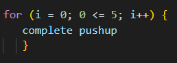
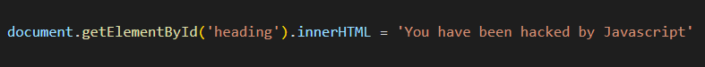
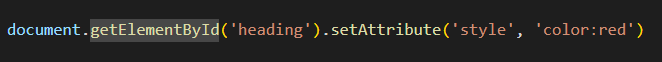
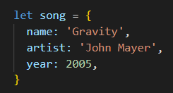
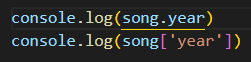
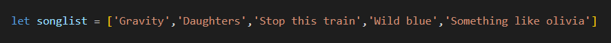
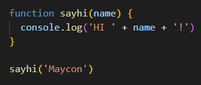

- TE-Houtaewa
- HTML-CSS
- Identity Values
- Learning Plan
- Emotional Intelligence
- Javascript Fundamentals
- Problem Solving
- Neuroplasticity
- Foundations Reflection
BLOG
By Maycon Assis
JS Fundamentals
To keep things simple, I like to picture HTML, CSS and Javascript and their relationship as a fully functioning store. Now, think of any store that you have been to recently or one that you visit often.
We know HTML defines the general structure and the content of our website. Using a functioning store as our analogy, HTML would have to be the actual physical building the store is operating in and all of the contents inside the store. For example, products, signs, shelves etc. Now, since we know that CSS is used to style our website and determine how it will look and feel, we can say that CSS is the layout and decoration of the contents inside our store. Where shelves are postioned, how products are positioned, the colours etc. Finally, Javascript is the employees and all the people that operate the store, which allows it to be fully functional. Otherwise it would just be a building with stuff inside. Javascript allows for movement and interacivity in our website. In a similar way the employees are the ones moving around all the contents in the store by stocking, selling, shipping etc. They are also who allows us customers to purchase items.
Control Flow and Loops.
Control flow is quite simply the order in which code is executed in a script. By default, the code will be executed from top to bottom, that is, from the first line of code to the last. Loops are one of the structures that can alter the control flow. Loops allows us to execute the same code multiple times in a row or basically loop through a set of instruction until a condition is met which causes it to stop. Loops are useful whenever we want to execute the same set of instructions multiple times. Assume I have a workout routine. My workout routine contains five different exercises. Some of my exercises require me to complete a minimum number of repetitions before I am able to move on to the next exercise. In a similar way, loops repeat a set of instructions until it is allowed to stop.
Describe what the DOM is and an example of how you might interact with it.
The Document Object Model (DOM) is a programming interface that represents web documents(HTML) and all of it's content as a tree-like structure with a series of objects. It is the same document as the HTML source, only represented differently. This object oriented representation is what allows programming languages like Javascript to interact with HTML documents. This also allows us to manipulate the elements and pretty much everything thing about them with properties and methods. One of the methods that I have been using a lot lately is the 'document.getElementbyId'() which, like the name implies lets me get an element by it's Id which is unique. Then I can a property like the 'innerHTML', which can set or modify the HTML contents of this element. Or I can instead use the setAttribute method to alter any sort of styling of that element. Examples Below.
 Explain the difference between accessing data from arrays and object.
Objects and arrays are two ways you can store a collection of data while programming. Objects are essentially containers which store data in name:value pairs which are called properties.An object can have multiple properties. These properties can be accessed through dot notation or bracket notation(see below). An array on the other hand, stores a list of multiple items in a single variable. Arrays are often useful when you want to store a list of ordered items as it allows you access these items by referencing their individual position inside of the array(see below.)
  
Explain what functions are and why they are helpful.
A function is simply a section of code that performs a specific task only when it is called to do so. They are one of the most important structures in programming. They are extremely useful because it basically allows you to reuse the section of code multiple times by calling it(see below). This makes ours lives an infinite amount of times easier because it means we don't have to keep copying and rewriting the same section of code over and over in different parts of our code. We declare the function once with the set of instructions, then we just call it whenever it is needed. They are also able to have parameters which are like placeholder variables which allows us to pass different inputs into the same function whenever we want. So we don't have to write a unique code if we want our function to operate with different values. 